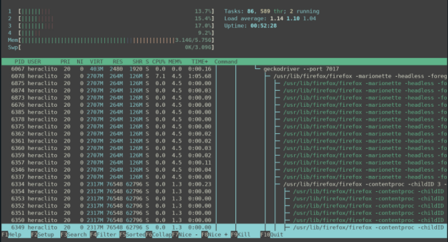

Processos, threads e escalonamento
- Processadores de contexto múltiplo fornecem conjuntos de registros múltiplos para multiplexar vários threads em um pipeline de processador, a fim de tolerar essas latentes de comunicação e sincronização. Vários conjuntos de registros, incluindo vários ponteiros de instrução, permitem que o estado de vários threads sejam carregados e prontos para serem executados ao mesmo tempo. [Fiske, 1995]
Processos
- Um processo é basicamente um programa em execução. Associado a cada processo está o seu espaço de endereçamento e uma lista de posições de memória que este processo pode ler e escrever. [Faria, 2013]
Threads
- Uma execução de instruções que pode ser executado em paralelo em vários processos ou concorrente atraves de um processo.
- Existe dois tipos distintas de Threads:
- User-level = Podemos utilizar no código (essa que usamos para fazer esse projeto)
- Kernel-level = Threads que são low-level e são diretamente ligadas aos processos do sistema operacional.
Escalonamento de processos
- Atividade responsável pela alocação dos processos aos processadores.[Maciel, 2013]
Porque usamos Multithreads ao inves do Multiprocessors?
Para o projeto verificamos que cada genero escolhido pelo usuário tem pelo menos 1000 filmes. Executando esse programa de forma linear demoraria horas para finalizar a execução. Porque utilizamos Multithreads? Pois, multiprocessadores está totalmente relacionado aos cores da máquina e os múltiplos processos do Python tem muito overhead. Então utilizamos Multithreaded Web Scraping, pois pode executar tasks concorrentes através de múltiplas threads no mesmo processo, e essas tasks podem ser executadas enquanto o Python está sendo executado, e essas threadssão executadas asíncronamente.
with ThreadPoolExecutor(max_workers=5) as executor:
futures = [executor.submit(scrapping_movie_page, url) for url in movieList]
results = []
for result in futures:
results.append(result)No código definimos que o códio iria rodar com 5 threads, definido pelo max_workers.  Depois da execução do código, verificamos o número de threads que estão rodando e o gerenciamento de memória em no sistema operacional Arch.